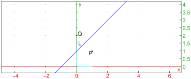

25.14.3 Reflections in the plane
See Section
26.12.3
for reflections in space.
The
reflection
command creates a reflection.
reflection
takes one mandatory argument and one optional argument:
P
, a point or a line.
Optionally,
G
, a geometric object.
reflection(
P
)
returns a new command which reflects about
P
.
reflection(
P
,
G
)
returns and draws the reflection of
G
about
P
.
Examples
rf
:=
reflection
(-1);
rf
(1+
i
)
or:
reflection
(-1,1+
i
)
L
:=
line
(-1,
i
,
color
=
blue
);
P
:=
point
(1+
i
);
Q
:=
reflection
(
L
,
P
)
